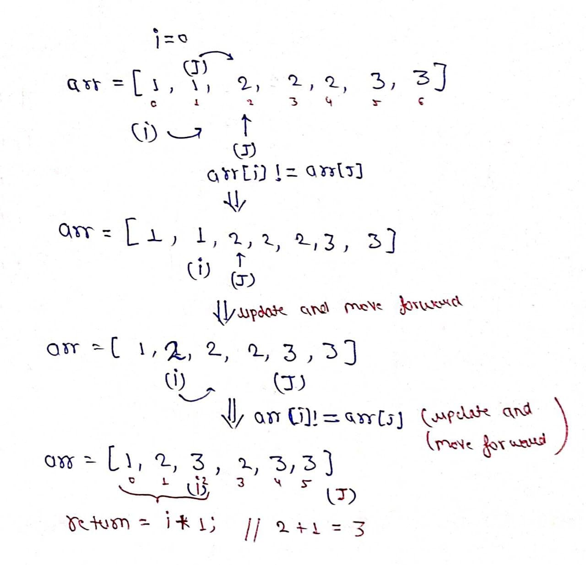

Problem Statement: Given an integer array sorted in non-decreasing order, remove the duplicates in place such that each unique element appears only once. The relative order of the elements should be kept the same.
If there are k elements after removing the duplicates, then the first k elements of the array should hold the final result. It does not matter what you leave beyond the first k elements.
Note: Return k after placing the final result in the first k slots of the array.
Examples
Example 1: Input: arr[1,1,2,2,2,3,3] Output: arr[1,2,3,_,_,_,_] Explanation: Total number of unique elements are 3, i.e[1,2,3] and Therefore return 3 after assigning [1,2,3] in the beginning of the array. Example 2: Input: arr[1,1,1,2,2,3,3,3,3,4,4] Output: arr[1,2,3,4,_,_,_,_,_,_,_] Explanation: Total number of unique elements are 4, i.e[1,2,3,4] and Therefore return 4 after assigning [1,2,3,4] in the beginning of the array.

Disclaimer: Don’t jump directly to the solution, try it out yourself first.
Brute Force Approach
Algorithm / Intuition
Solution 1: Brute Force
Intuition: We have to think of a data structure that does not store duplicate elements. So can we use a Hash set? Yes! We can. As we know HashSet only stores unique elements.
Approach:
- Declare a HashSet.
- Run a for loop from starting to the end.
- Put every element of the array in the set.
- Store size of the set in a variable K.
- Now put all elements of the set in the array from the starting of the array.
- Return K.
Code
#include<bits/stdc++.h>
using namespace std;
int removeDuplicates(int arr[], int n) {
set < int > set;
for (int i = 0; i < n; i++) {
set.insert(arr[i]);
}
int k = set.size();
int j = 0;
for (int x: set) {
arr[j++] = x;
}
return k;
}
int main() {
int arr[] = {1,1,2,2,2,3,3};
int n = sizeof(arr)/sizeof(arr[0]);
int k = removeDuplicates(arr, n);
cout << "The array after removing duplicate elements is " << endl;
for (int i = 0; i < k; i++) {
cout << arr[i] << " ";
}
}
Output: The array after removing duplicate elements is 1 2 3
import java.util.*;
public class Main {
public static void main(String[] args) {
int arr[] = {1,1,2,2,2,3,3};
int k = removeDuplicates(arr);
System.out.println("The array after removing duplicate elements is ");
for (int i = 0; i < k; i++) {
System.out.print(arr[i] + " ");
}
}
static int removeDuplicates(int[] arr) {
HashSet < Integer > set = new HashSet < > ();
for (int i = 0; i < arr.length; i++) {
set.add(arr[i]);
}
int k = set.size();
int j = 0;
for (int x: set) {
arr[j++] = x;
}
return k;
}
}
Output: The array after removing duplicate elements is 1 2 3
from typing import List
def removeDuplicates(arr: List[int]) -> int:
st = set()
for i in range(len(arr)):
st.add(arr[i])
k = len(st)
j = 0
for x in st:
arr[j] = x
j += 1
return k
if __name__ == "__main__":
arr = [1, 1, 2, 2, 2, 3, 3]
k = removeDuplicates(arr)
print("The array after removing duplicate elements is ")
for i in range(k):
print(arr[i], end=" ")
Output: The array after removing duplicate elements is 1 2 3
function removeDuplicates(arr) {
let set = new Set(arr);
let uniqueArr = Array.from(set);
for (let i = 0; i < uniqueArr.length; i++) {
arr[i] = uniqueArr[i];
}
return uniqueArr.length;
}
const arr = [1, 1, 2, 2, 2, 3, 3];
const k = removeDuplicates(arr);
console.log("The array after removing duplicate elements is:");
for (let i = 0; i < k; i++) {
console.log(arr[i]);
}
Output: The array after removing duplicate elements is 1 2 3
Complexity Analysis
Time complexity: O(n*log(n))+O(n)
Space Complexity: O(n)
Optimal Approach
Algorithm / Intuition
Solution 2: Two pointers
Intuition: We can think of using two pointers ‘i’ and ‘j’, we move ‘j’ till we don't get a number arr[j] which is different from arr[i]. As we got a unique number we will increase the i pointer and update its value by arr[j].
Approach:
- Take a variable i as 0;
- Use a for loop by using a variable ‘j’ from 1 to length of the array.
- If arr[j] != arr[i], increase ‘i’ and update arr[i] == arr[j].
- After completion of the loop return i+1, i.e size of the array of unique elements.

Code
#include<bits/stdc++.h>
using namespace std;
int removeDuplicates(int arr[], int n)
{
int i = 0;
for (int j = 1; j < n; j++) {
if (arr[i] != arr[j]) {
i++;
arr[i] = arr[j];
}
}
return i + 1;
}
int main() {
int arr[] = {1,1,2,2,2,3,3};
int n = sizeof(arr)/sizeof(arr[0]);
int k = removeDuplicates(arr, n);
cout << "The array after removing duplicate elements is " << endl;
for (int i = 0; i < k; i++) {
cout << arr[i] << " ";
}
}
Output:
The array after removing duplicate elements is 1 2 3
import java.util.*;
public class Main {
public static void main(String[] args) {
int arr[] = {1,1,2,2,2,3,3};
int k = removeDuplicates(arr);
System.out.println("The array after removing duplicate elements is ");
for (int i = 0; i < k; i++) {
System.out.print(arr[i] + " ");
}
}
static int removeDuplicates(int[] arr) {
int i = 0;
for (int j = 1; j < arr.length; j++) {
if (arr[i] != arr[j]) {
i++;
arr[i] = arr[j];
}
}
return i + 1;
}
}
Output:
The array after removing duplicate elements is 1 2 3
from typing import List
def removeDuplicates(arr: List[int]) -> int:
i = 0
for j in range(1, len(arr)):
if arr[i] != arr[j]:
i += 1
arr[i] = arr[j]
return i + 1
if __name__ == "__main__":
arr = [1, 1, 2, 2, 2, 3, 3]
k = removeDuplicates(arr)
print("The array after removing duplicate elements is ")
for i in range(k):
print(arr[i], end=" ")
Output:
The array after removing duplicate elements is 1 2 3
function removeDuplicates(arr) {
let i = 0;
for (let j = 1; j < arr.length; j++) {
if (arr[i] !== arr[j]) {
i++;
arr[i] = arr[j];
}
}
return i + 1;
}
const arr = [1, 1, 2, 2, 2, 3, 3];
const k = removeDuplicates(arr);
console.log("The array after removing duplicate elements is:");
for (let i = 0; i < k; i++) {
console.log(arr[i]);
}
Output:
The array after removing duplicate elements is 1 2 3
Complexity Analysis
Time Complexity: O(N)
Space Complexity: O(1)
Video Explanation
Special thanks to Prashant Sahu and Sudip Ghosh for contributing to this article on takeUforward. If you also wish to share your knowledge with the takeUforward fam, please check out this article